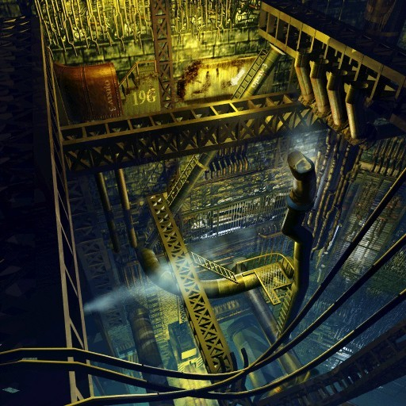
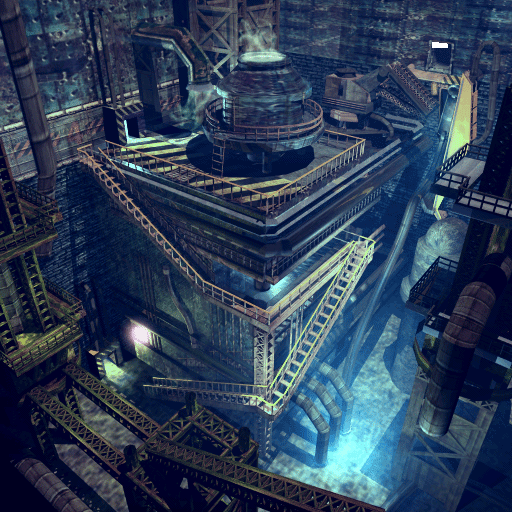
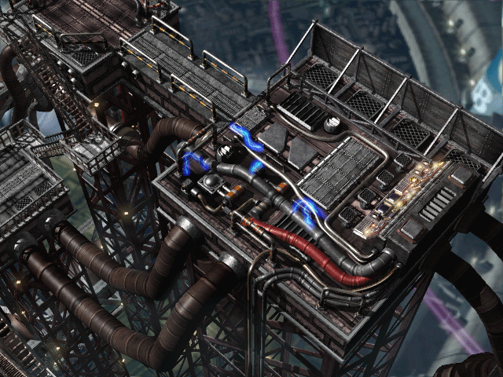
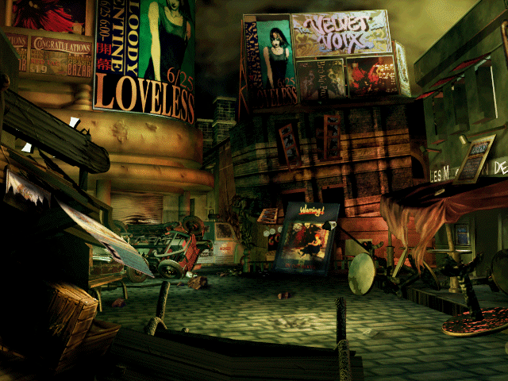
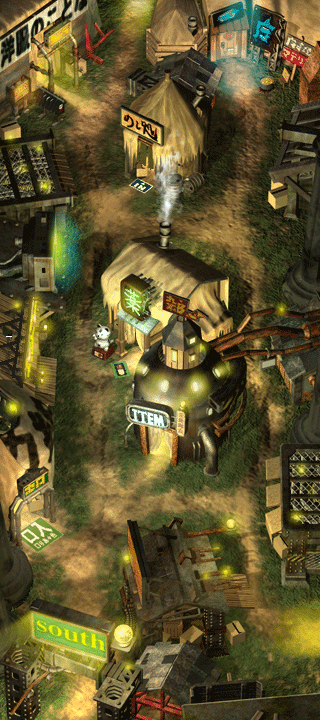
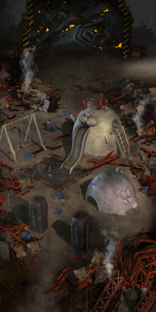
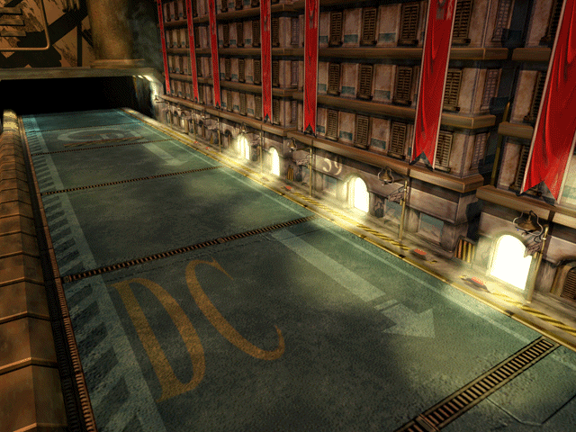
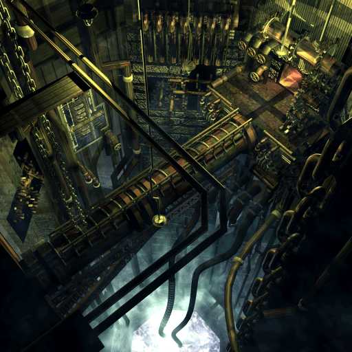
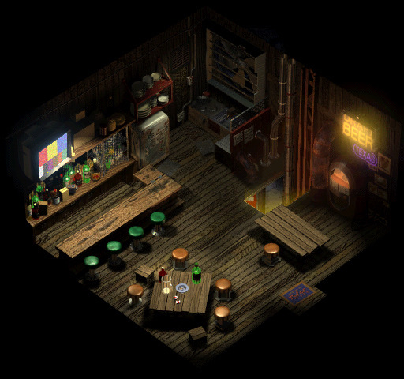
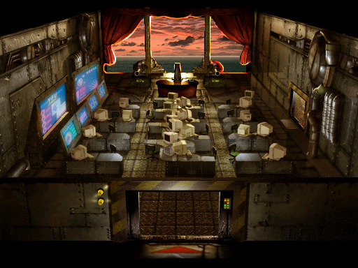

The industrial design and choice of palette in FF7 was amazing. I’ll always be disappointed that the pre-rendered backgrounds are so small that I can’t have enormous prints of them.
Found here: http://imgur.com/a/shRaP